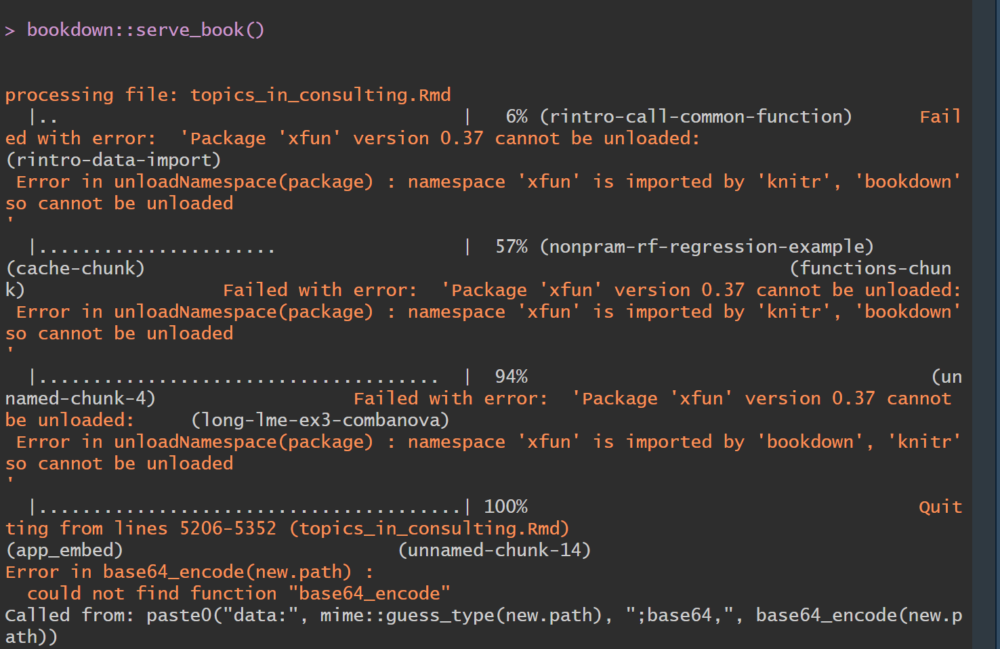
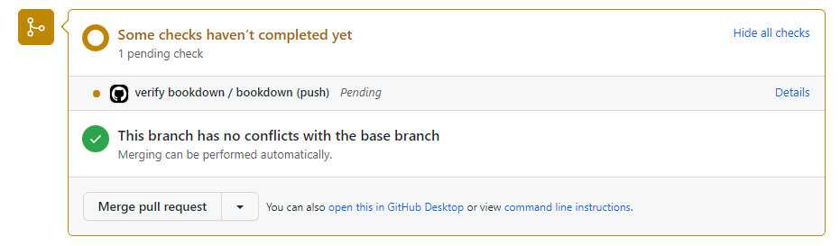
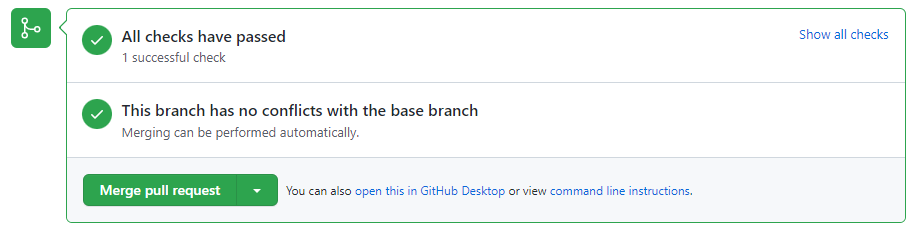
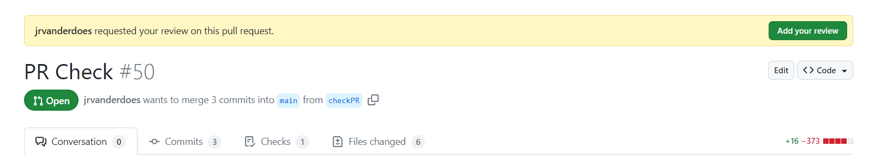

E Book Development Walkthrough
Author: Joslin Goh, Jeremy VanderDoes
Last Updated: Sep 10, 2024
E.1 Development process
This document walks through development of the living book for those who have access and wish to add information. Each section contains necessary code, with any required modifications mentioned. Sections contain general goals, subsections highlight when to do it, and sub-subsections are merely for your information if you want to learn more about it or there is some problem.
Throughout this, there are often may ways to do something. I tried to include the most common, ordering them in way may be the simplest for people not used to using GitHub, but feel free to use any method.
If you ever have any problems, feel free to reach out!
E.2 Git Setup
This part may already be complete if you have used GitHub before, and is also outlined in the readme file. The point on this section is to install the necessary software to work with the book (beyond that found in R).
E.2.1 Software Installation
You will need Git installed on your computer. If you are running a Mac or Linux computer, this may already be done! However, you can still follow the instructions if unsure. For everyone else, to download it, there are two options.
- If you are new, and want a nice application to use, try GitHub Desktop. This helps working with both GitHub and the language Git. Install it at the website and it should walk you through the installation. (I will update this section with more instructions in the future).
- Alternatively, you can download the Git software directly. This is found on the Git site, and has instructions on installation for your computer.
E.3 Package Connection
This section is made to get the book on your computer and ensure you are also add information to the remote server.
E.3.1 First Time Setup
After opening the github page, there are three main ways to download the project to your computer, outlined below. Please use whichever one you are most comfortable with.
- If you installed GitHub Desktop on your machine, on the github page, click the <> Code button and select Open with Github Desktop.
- Right click in the desired location on your computer and open git bash. Type git clone
where indicates the the https url retrieved on the github page, clicking the green <> Code button. This URL should be https://github.com/scsru/Modules.git. - Right click in the desired location on your computer and open git GUI. Select Clone Existing Repository and enter the git
in Source Location. This is retrieved on the github page, by clicking the green <> Code button (https://github.com/scsru/Modules.git). Enter your desired location on the computer in Target Directory.
E.3.1.1 Additional Information
This step is called cloning a repository (or repo for short) and creates a copy of the online hosted package on your computer. Because of this, you can change things on your computer and then when everything is working, push changes to the remote server for others to access (discussed in a later section).
One possible issue is that GitHub says you do not have access or fails on clone. In this case, you may be on a computer where your Github credentials were not setup. Open Git Bash as try:
You should be prompted on connecting an account.
E.3.2 Subsequent Uses
While you may have previously cloned the repository, others may have made changes and updated it since you copied it. Because of this, it is good practice to always pull the project before working on it to ensure you are using an up-to-date version. You can do this in one of the follow ways:
- Using GitHub Desktop: In the folder of the project, it should have a nice option for pulling the project.
- Using Rstudio. Often when you open a project that has been connected to GitHub, RStudio will recognize it and at the top left, another tab near environment and history will be called Git. There is a blue arrow in this tab with the words pull next to it. (Currently I do not have it setup on this test computer, so I will add to this later with detailed instructions)
- In the project folder, right click and open git GUI. Go to branch > update in the top options.
- In the project folder, right click and open git bash. Enter git pull.
E.3.2.1 Additional Information
Pulling a repo is done regularly to ensure you work on the latest version of codes. Generally this will be sufficient; however, it is possible to write some code and then pull if someone has pushed new information since you started. This will typically work normally, but if the changes that conflict or interact with your changes, GitHub may ask about it. In this case, we need to do a merge where we look at the differences and choose which changes to keep (which may be both if we determine they do not actually interact).
E.4 Local Project Development
This section is all about ensuring everything is correct on your computer to begin development.
E.4.2 Package Setup
We use the package renv to version packages of the code and prevent breaks by unexpectedly running different versions.
The following code gets the currently included libraries and versions. Run
You may need to install renv. If this is your first time using renv, you could get a message like given below, which asks you to activate the project. Say yes (or 1 depending on the version). If you have used it, but this is your first use on this project, you may only get the second message.

Restore all of the libraries. The first time you do this, a lot of packages will be listed and you are asked to restore it. Note, this may happen after the last messages.

E.4.3 (Optional) Compile Check
This optional check is done later, but I recommend it to check if anything is broken before you make changes. You dont want to think you broke something when it was already broken!
Run the following code to compile and serve (or load) book in a local browser.
E.4.3.1 Additional Information
This stage is finicky. If you get weird failures for basic libraries or just have issues, try updating R! This is the most common often the issue at this point.  If a small package is broken, you can try to update it or re-restore the renv environment.
Proceed when asked, we can always fix it if a package is better when not updated.
Due to the nature of this step, if none of the given suggestions work, the best advice is to reach out.
E.4.4 Development
It is finally time for development by adding or changing modules. It is good practice to develop on a new GitHub branch so it is easy to understand what you are doing and not mix up potential issues if something isnt working. This can be done as:
- GitHub Desktop: There should be an option to create a branch. I will add more information when I have a different computer nearby.
- Git GUI: Right click in project, select git GUI and select branch > create. Follow any prompts.
- Git Bash: Right click in project, select git bash and type git checkout -b
It is a good idea to check which branch you are on in GitHub Desktop, Git, or RStudio.
Make any changes to the project (including changes to references.bib). If any new libraries are needed in the renv, Rstudio will act as if it has never been installed. For example, you may see a yellow bar above the code.
 You can just use install.packages(
You can just use install.packages(
In order to add the new module in the book, add a -
E.4.5 Test Code
To check the code, the first step is to see if it works locally. This can be done using the following code, which may take awhile on first compilation:
If there are not errors, the code should open a viewer in RStudio and give a link that you enter the given address into any web browser for a locally hosted version. You may stop the code using
which is given and noting that the 1 may change if you have multiple instances running without closure.
E.4.5.1 Additional Information
If you see no error, but the hosted book does not include your new module, you probably forgot to include the file in the previous string and run the code to save it.
If you mistyped the name, then you will see an error like follows.

If you forgot to install (or restore) a package, the following error may be displayed

E.5 Send Changes to Server
This section focuses on preparing and sending changes to the remote server.
E.5.1 Save Environment
Any additional or changed packages need to be recorded for consistency with other developers and to inform GitHub what is needed to host the book.
Save all changes with
If no packages were added or updates, you will get the following result.

If packages were added, removed, or updated, you will get a result similar to the following.

It is recommended to only update packages that must be updated for functionality as some may have been downgraded for GitHub server reasons.
E.5.2 Prepare for GitHub
This step we do a last verification of the code of the book. Be sure the file_contents variable is correct in the code section at the end of this readme (also reach update_contents using ctrl-f). We now write that information in a .yml file for the book creation.
It may also be useful to check the code, again using the code
E.5.3 Push to GitHub
When the book works locally and you have saved the environment, it is time to push all changes to the GitHub server. There are several steps to this: stage (this specifies which changed files you wish to send to GitHub), commit (this gives a nice message and prepare the files to be send to GitHub), and push (this pushes all commits to GitHub). You can do these steps using GitHub Desktop, RStudio, or git directly.
- GitHub desktop should have some nice buttons.

- RStudio should have some nice buttons. I will add more on this later.
- If you use git GUI, you have several options, but generally click file icons from the top part to bring them into the staged area, write something in the commit message section and press commit, then press push.
- If you use git bash, on your branch, you stage changes (git add . will stage all changes), commit (git commit -m
will commit changes with some message from you), and push (git push will push changes to GitHub). There may be a comment about creating a branch online when you push, but the code will be given if needed (see next figure for pushing a branch I made locally called fixReadme). These steps will get your code online, where you can PR into dev. 
E.5.4 Check GitHub
When you push to GitHub, GitHub actions will automatically check to see if there are any issues in creating the book on the server. You can monitor the progress in the Actions tab, results on the branch (which are small), or see the result if the branch is part of a pull request (discussed later).
A check is excellent news! Any red X is a failure. Looking at the steps should offer information to find the issue. Some common errors may occur in the following steps: - Setup R Environment: An error in this step likely requires upgrading or downgrading a package. - Build Site: An error in this step likely indicates that you forgot to include the package in the renv.lock file. Run renv::snapshot() in the local environment and re-push.
E.6 Publish Changes
You may have noticed, no changes are visible on the online book yet. There are still a few steps, which are covered below.
E.6.1 Merge With Dev
We want to prepare your changes to get to production. The first thing to do, if you didnt code on it, is to merge your code into the dev branch. This will make sure any other changes are incorporated and check that all is working.
It is good practice to merge your branch with the dev branch using a pull request (PR). Although it doesnt need to be approved at this step, using a PR will remind you if the checks fail.
You can do this on the GitHub page, where near the top is the Pull requests tab and in there a green button called new. There you select a branch and where is should go, be sure to watch the arrows.
On a PR, you change ensure the code is passing all internal checks. - A check in progress looks like the following on a PR.  - Passing the tests will get you a result like the following.  - (I will add a failure example)
E.6.1.1 Additional Information
Merging may require you making local changes and re-pushing to GitHub. Any new pushes on the branch will automatically be included in the merge.
Merge to dev when you have no errors and test the results. Again, this will not change the published book.
It is good practice to delete the branch after merging to keep the history clean. A notification at the bottom of the PR is given.
E.6.2 Merge Dev to Main
This step will send all changes in the development version to the production version. When it is decided that we should do so, a pull request for dev to main is made. This is similar to previous PRs and the same checks apply. Note, if you try to directly push into main, there will be an error (below is an example in Git Bash). You must use a pull request.

However, you can not immediately accept a PR into main. It requires approval from another person, so be sure to include them in the PR and add informative comments on the PR. If you do not have approval yet, you will see the following where you normally merge.

You can set any reviewer(s) at the top right of the page, as shown below.


A reviewer may get notified (depending on settings), but upon entering the PR will see a banner near the top.  The reviewer can then look at the code and add comments, require changes, or approve the PR. If they have previously interacted, then GitHub will highlight any changes after the comment.
After approval, the PR can be merged with main. The reviewer may do this; however, it is available for anyone.
Upon merging dev to main, github actions will check the code again and publish the results to the book. You can verify the progress in the actions page. After completion, if you go to the website and dont notice changes, be sure to refresh the page and/or wait a few minutes.
Although it is good practice to delete the smaller branches, we do not delete dev or main. This option will not be given at the bottom of PRs.
E.7 Final Remarks and Tips
Congratulations for reading through this document and updating the book!
Once you have read this file, you may feel comfortable with the development process and only want to use this to get the code for running different formats of the book. Search (Ctrl-f in windows) for update_contents for the code where you define the new modules. Then run bookdown::serve_book() to check the book.
E.8 Code Section
file_contents <- paste0(
'
new_session: no
delete_merged_file: true
book_filename: "topics_in_consulting.Rmd"
rmd_files:
- "index.Rmd"
- "mod_intro_r.Rmd"
- "mod_ggplot2.Rmd"
- "mod_linear_regression.Rmd"
- "mod_generalizedlinearmodels.Rmd"
- "mod_nonparametric.Rmd"
- "mod_longitudinal.Rmd"
- "mod_questionnaire_design.Rmd"
- "mod_sample_size.Rmd" ')
final_contents <-
paste0(file_contents,'
- "app_general_guidelines.Rmd"
- "app_formatting_guidelines.Rmd"
- "app_git_tutorial.Rmd"
- "app_bookdown_tests.Rmd"
- "app_development.Rmd"
- "Z_references.Rmd" ')
write(final_contents,"./_bookdown.yml")